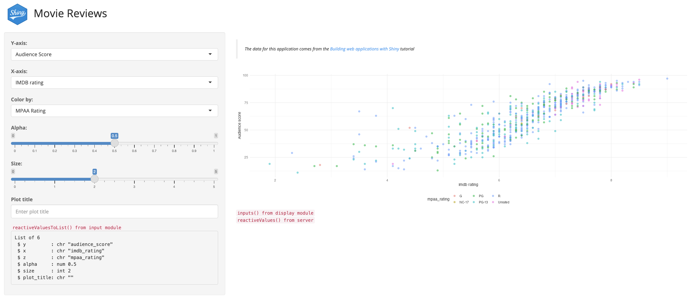
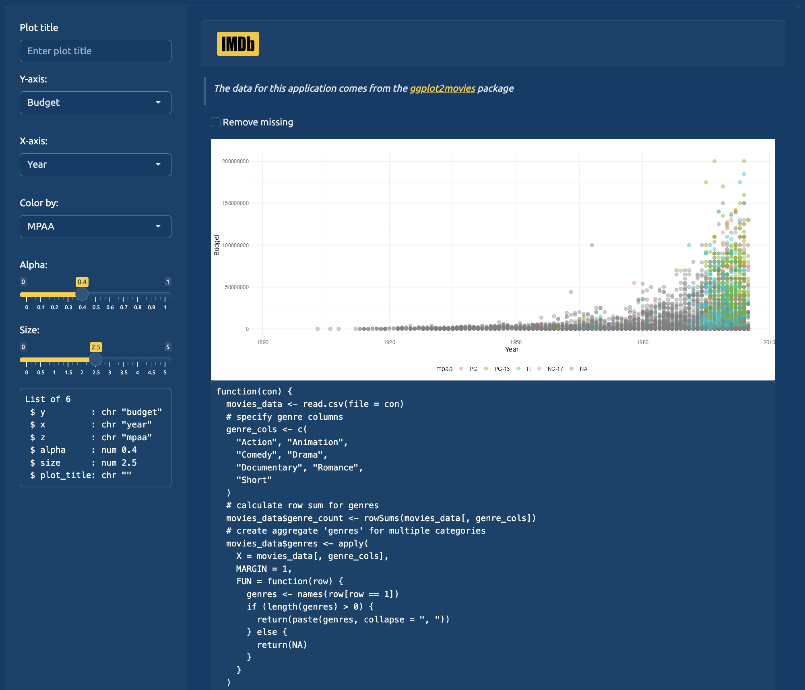

# install.packages('pak')
pak::pak('mjfrigaard/shinypak')27 App data
This chapter covers using session$userData vs. reactiveValues() in an application to store values and objects. Whether to use session$userData or reactiveValues() will depend on the purpose you want them to serve (and what you want to store/access) in your application.
27.1 reactiveValues()
Launch app with the shinypak package:
launch('26.1.0_reactive-values')Calling reactiveValues() creates “an object for storing reactive values.” We’ve been storing the reactive values returned from the var_input module in the selected_vars object, then passing these values into the scatter_display module. 1
movies_server <- function(input, output, session) {
selected_vars <- mod_var_input_server("vars")
mod_scatter_display_server("plot", var_inputs = selected_vars)
}- 1
-
reactive values returned from
var_inputmodule
- 2
-
reactive values passed to
scatter_displaymodule
In the steps below we’ll walk through an example of using reactiveValues() to capture the selected_vars values returned from the var_input module and passed to the scatter_display module.
You should note a series of changes made to movies_server() in this branch:
reactiveValues()is used to createrValsInstead of creating the
selected_vars, the output frommod_var_input_server()is assigned torValsasinputsrValsis then passed as an input argument tomod_scatter_display_server().devarguments have been added to both module server functions (and have been set toFALSE)
# assign inputs to rVals
movies_server <- function(input, output, session) {
# create reactive values
rVals <- reactiveValues()
# assign inputs to rVals
rVals$inputs <- mod_var_input_server("vars", .dev = FALSE)
# view output in the UI
output$vals <- renderPrint({
})
# pass reactive values to display
mod_scatter_display_server("plot", rVals = rVals, .dev = FALSE)
}- 1
-
New
reactiveValues()object
- 2
-
Returned values from
mod_var_input_server()assigned torVals$inputs
- 3
-
renderPrint()for displaying reactive values in UI
- 4
-
rValsobject passed tomod_scatter_display_server()
In the steps below, we’ll view the structure and function of rVals and the reactive values in the application using methods covered in the Debugging chapter.
27.1.1 Step 1
In movies_server(), the .dev in mod_var_input_server() is set to TRUE (the updated movies_server() function is below):
Launch app with the shinypak package:
launch('26.1.1_step_01')# assign inputs to rVals
movies_server <- function(input, output, session) {
# create reactive values
rVals <- reactiveValues()
# assign inputs to rVals
rVals$inputs <- mod_var_input_server("vars", .dev = TRUE)
# pass reactive values to display
mod_scatter_display_server("plot", rVals = rVals, .dev = FALSE)
}- 1
-
.devhas been set toTRUE
When we load the package and run the application, we see the following:2

.dev = TRUE in mod_var_input_server()
mod_var_input_server()
The output in the sidebar are the reactive values from the variable input module (mod_var_input_server()). The server function has been simplified to return the output from reactiveValuesToList(), and the output is being rendered in the sidebar when .dev is set to TRUE:
mod_var_input_server <- function(id, .dev = TRUE) {
moduleServer(id, function(input, output, session) {
if (.dev) {
# view output in the UI
output$vals <- renderPrint({
x <- reactiveValuesToList(input, all.names = TRUE)
str(x)
})
}
# return reactives
return(
reactive({
reactiveValuesToList(input, all.names = TRUE)
})
)
})
}27.1.2 Step 2
The renderPrint() in movies_server() displays the structure of rVals in the mainPanel() (the updated movies_server() function is below):
Launch app with the shinypak package:
launch('26.1.2_step_02')# assign inputs to rVals
movies_server <- function(input, output, session) {
# create reactive values
rVals <- reactiveValues()
# assign inputs to rVals
rVals$inputs <- mod_var_input_server("vars", .dev = TRUE)
# view output in the UI
output$vals <- renderPrint({
str(rVals)
})
# pass reactive values to display
mod_scatter_display_server("plot", rVals = rVals, .dev = FALSE)
}- 1
-
Set
.devtoTRUE - 2
-
Display output from
str(rVals)

str(rVals)from movies_server()
rVals$inputs() from movies_server()
27.1.2.1 What is reactiveValues()?
“When you read a value from it, the calling reactive expression takes a reactive dependency on that value, and when you write to it, it notifies any reactive functions that depend on that value. Note that values taken from the
reactiveValues()object are reactive, but thereactiveValues()object itself is not.” Shiny Documentation
I’ve added emphasis to the quote above because it’s important to remember that any object assign to reactiveValue() should be treated like any reactive object (i.e., and inputId or object returned from reactive() or observe()).3
For example, if we try to access the input values as a list outside movies_server() or the module server function, we see the following error:4
x <- reactiveValues(
inputs = list(x = "imdb_rating",
y = "audience_score",
z = "mpaa_rating",
alpha = 0.5,
size = 2,
plot_title = "Enter Plot Title")
)
x$inputs()## Error in `x$inputs`:
## ! Can't access reactive value 'inputs' outside of reactive consumer.
## ℹ Do you need to wrap inside reactive() or observe()?27.1.3 Step 3
In this branch, the renderPrint() displays the structure of rVals$inputs() (the updated movies_server() function is below):
Launch app with the shinypak package:
launch('26.1.3_step_03')# assign inputs to rVals
movies_server <- function(input, output, session) {
# create reactive values
rVals <- reactiveValues()
# assign inputs to rVals
rVals$inputs <- mod_var_input_server("vars", .dev = TRUE)
# view output in the UI
output$vals <- renderPrint({
str(rVals$inputs())
})
# pass reactive values to display
mod_scatter_display_server("plot", rVals = rVals, .dev = FALSE)
}- 1
-
Set
.devtoTRUE - 2
-
Display
str(rVals$inputs())

str(rVals)from movies_server()
rVals$inputs() from movies_server()
The rVals$inputs() being rendered in movies_server() are the returned values from the variable input module (and they’re identical to the values in the sidebar).
When rVals is passed to mod_scatter_display_server(), the reactive inputs() object (passed inside the function) is built as rVals$inputs():
inputs <- reactive({
plot_title <- tools::toTitleCase(rVals$inputs()[['plot_title']])
list(
x = rVals$inputs()[['x']],
y = rVals$inputs()[['y']],
z = rVals$inputs()[['z']],
alpha = rVals$inputs()[['alpha']],
size = rVals$inputs()[['size']],
plot_title = plot_title
)
})The mod_scatter_display_server() function will display the structure of rVals$inputs() if the .dev argument is set to TRUE:
if (.dev) {
# view output in the UI
output$display_vals <- renderPrint({
str(
rVals$inputs()
)
})
}27.1.4 Step 4
In this final step, the .dev argument has been set to TRUE in the mod_scatter_display_server() (the updates movies_server() function is below):
Launch app with the shinypak package:
launch('26.1.4_step_04')# assign inputs to rVals
movies_server <- function(input, output, session) {
# create reactive values
rVals <- reactiveValues()
# assign inputs to rVals
rVals$inputs <- mod_var_input_server("vars", .dev = TRUE)
# view output in the UI
output$vals <- renderPrint({
rVals$inputs()
})
# pass reactive values to display
mod_scatter_display_server("plot", rVals = rVals, .dev = TRUE)
}- 1
-
Set
.devtoTRUE
- 2
-
Display
rVals$inputs()
- 3
-
Set
.devtoTRUE

.dev set to TRUE and reactive values from movies_server()
.dev arguments set to TRUE and rVals$inputs() from movies_server()
The display we’re seeing directly below the graph (i.e., under inputs() from display module) is the structure of rVals$inputs() from mod_scatter_display_server():
if (.dev) {
# view output in the UI
output$display_vals <- renderPrint({
str(
rVals$inputs()
)
})
}An important thing to note is that we can only reference rVals$inputs() in a reactive consumer (i.e., using reactive(), observe(), etc.). That’s why when we change any of the UI inputs, the values change in rVals$inputs() and in the inputs() object inside the display module.
You can also view these outputs using launch_app(run = 'b', bslib = TRUE).
27.1.5 Testing reactiveValues()
If you decide to use reactiveValues() or session$userData, you’ll need to confirm these objects in your tests. The module tests for test-mod_scatter_display.R have been redesigned to handle the reactiveValues() input.5
I’ll briefly summarize the changes below:
args = list()intestServer()now takes the output from helper functions (stored intests/testthat/helper.RandR/testthat.R). 6make_initial_rVals_inputs <- function() { rVals <- reactiveValues( inputs = reactive(list( x = "imdb_rating", y = "audience_score", z = "mpaa_rating", alpha = 0.5, size = 2, plot_title = "Enter Plot Title" )) ) return(rVals) }This creates a
reaciveValues()list that can be used in the test:rVals <- make_initial_rVals_inputs() rVals ## <ReactiveValues> ## Values: inputs ## Readonly: FALSEWe can view it’s contents by wrapping it in
isolate().isolate(rVals$inputs()) ## $x ## [1] "imdb_rating" ## ## $y ## [1] "audience_score" ## ## $z ## [1] "mpaa_rating" ## ## $alpha ## [1] 0.5 ## ## $size ## [1] 2 ## ## $plot_title ## [1] "Enter Plot Title"Passing
make_initial_rVals_inputs()to theargsintestServer()requires creatingrVals(which can be referenced in the test asrVals$inputs():shiny::testServer(app = mod_scatter_display_server, args = list(rVals = make_initial_rVals_inputs()), expr = { testthat::expect_equal( object = rVals$inputs(), expected = list( x = "imdb_rating", y = "audience_score", z = "mpaa_rating", alpha = 0.5, size = 2, plot_title = "Enter Plot Title" ) ) })
27.2 session$userData
Objects stored in session$userData are not inherently reactive, which makes it ideal for storing persistent values or data that don’t require (or trigger) reactivity. Below is a demonstration of using session$userData to store a non-reactive function to be used in the inst/dev/ application.
Launch app with the shinypak package:
launch('26.2.0_user-data')27.2.0.1 Non-reactive objects
Objects we want to pass inside the server (and modules) but don’t need to update or change are perfect for session$userData. The example we’ll use below is a function (make_dev_ggp2_movies()) that prepares the ggplot2movies::movies for the application:
View make_dev_ggp2_movies() function
make_dev_ggp2_movies <- function(con) {
movies_data <- read.csv(file = con)
# specify genre columns
genre_cols <- c(
"Action", "Animation",
"Comedy", "Drama",
"Documentary", "Romance",
"Short"
)
# calculate row sum for genres
movies_data$genre_count <- rowSums(movies_data[, genre_cols])
# create aggregate 'genres' for multiple categories
movies_data$genres <- apply(
X = movies_data[, genre_cols],
MARGIN = 1,
FUN = function(row) {
genres <- names(row[row == 1])
if (length(genres) > 0) {
return(paste(genres, collapse = ", "))
} else {
return(NA)
}
}
)
# format variables
movies_data$genre_count <- as.integer(movies_data$genre_count)
movies_data$genre <- ifelse(test = movies_data$genre_count > 1,
yes = "Multiple genres",
no = movies_data$genres
)
movies_data$genre <- as.factor(movies_data$genre)
movies_data$mpaa <- factor(movies_data$mpaa,
levels = c("G", "PG", "PG-13", "R", "NC-17"),
labels = c("G", "PG", "PG-13", "R", "NC-17")
)
# reduce columns to only those in graph
movies_data[, c(
"title", "year", "length", "budget",
"rating", "votes", "mpaa", "genre_count",
"genres", "genre"
)]
}make_dev_ggp2_movies() is designed to take a path or URL (i.e., a connection) as an input and returns a dataset that can be used in the inst/dev/ application.
In the inst/dev/app.R file, the following changes have been made to devServer():
session$userDatastores the contents ofmake_dev_ggp2_movies()reactiveValues()is used to createrVals7The values returned from
mod_var_input_server()is assigned torValsasinputsdev_mod_scatter_server()as been updated to include arguments forrVals,userData,con, and.dev
devServer <- function(input, output, session) {
session$userData$make_dev_ggp2_movies <- make_dev_ggp2_movies
rVals <- reactiveValues()
rVals$inputs <- shinyAppPkgs::mod_var_input_server("vars",
.dev = TRUE)
dev_mod_scatter_server("plot",
rVals = rVals,
data_fun = session$userData$make_dev_ggp2_movies,
con = "https://bit.ly/3FQYR8j",
.dev = FALSE
)
}- 1
-
Create
userData$make_dev_ggp2_moviesthat holdsmake_dev_ggp2_movies() - 2
-
Create
rVals - 3
-
Assign output from
mod_var_input_server()torVals$inputs - 4
-
Updated
dev_mod_scatter_server()function
To view what’s happening with session$userData, we’ll run the application using the Run App button at the top of app.R


dev/inst/app.R
mod_var_input_server() in the sidebar
We’re using the same version of mod_var_input_server() from above that includes a .dev argument, so we know it’s displaying the contents from reactiveValuesToList() in the sidebar.
27.2.1 Step 1
In devServer(), a renderPrint() call has been added to display the structure of session in the UI:
Launch app with the shinypak package:
launch('26.2.1_step_01')devServer <- function(input, output, session) {
# add function to userData
session$userData$make_dev_ggp2_movies <- make_dev_ggp2_movies
# create reactive values
rVals <- reactiveValues()
# assign inputs to rVals
rVals$inputs <- shinyAppPkgs::mod_var_input_server("vars",
.dev = TRUE)
# view output in the UI
output$vals <- renderPrint({
str(session)
})
dev_mod_scatter_server("plot",
rVals = rVals,
data_fun = session$userData$make_dev_ggp2_movies,
con = "https://bit.ly/3FQYR8j",
.dev = FALSE
)
}- 1
-
Create
userData$make_dev_ggp2_moviesthat holdsmake_dev_ggp2_movies() - 2
-
Create
rVals - 3
-
Assign output from
mod_var_input_server()torVals$inputs - 4
-
Print the structure of
sessionto UI
- 5
-
Updated
dev_mod_scatter_server()function

str(session) dev/inst/app.R
str(session) from devServer()
27.2.1.1 What is session?
Each time the app launches, the session list is created and tied to that particular ’session.
“An environment for app authors and module/package authors to store whatever session-specific data they want.” Shiny Documentation
session$userData can store objects that should persist across different reactive contexts, but don’t need reactive updating (and won’t trigger reactivity). On the other hand, reactiveValues() creates objects stored in a reactive ‘state’, which will trigger reactive updates in the UI.’8
dev_mod_scatter_server() includes both reactiveValues() and session$userData. The arguments for rVals, data_fun, con, and .dev are described below:
rValsis thereactiveValues()object with our input valuesdata_funissession$userData$make_dev_ggp2_moviesconis the path or URL to thedata_funinsession$userData9
dev_mod_scatter_server("plot",
rVals = rVals,
data_fun = session$userData$make_dev_ggp2_movies,
con = "https://bit.ly/3FQYR8j",
.dev = FALSE)- 1
-
pass reactive values from
reactiveValues() - 2
-
pass
session$userDatawithmake_dev_ggp2_movies() - 3
-
pass connection to non-reactive object
- 4
-
view
userDatavalue in module
Inside the display module (dev_mod_scatter_server()), the data_fun() function creates all_data with con:
# use data_fun() function on con
all_data <- data_fun(con)The
inputs()list passed to the plotting function is very similar to the methods used inmod_scatter_display_server():inputs <- reactive({ plot_title <- tools::toTitleCase(rVals$inputs()[["plot_title"]]) list( x = rVals$inputs()[["x"]], y = rVals$inputs()[["y"]], z = rVals$inputs()[["z"]], alpha = rVals$inputs()[["alpha"]], size = rVals$inputs()[["size"]], plot_title = plot_title ) })The structure of
data_funis be printed to the UI when the.devargument is set toTRUE# view output in the UI if (.dev) { # view output in the UI output$data <- renderPrint({ data_fun }) }
27.2.2 Step 2
Change .dev argument in dev_mod_scatter_server() to TRUE:
Launch app with the shinypak package:
launch('26.2.2_step_02') dev_mod_scatter_server("plot",
rVals = rVals,
data_fun = session$userData$make_dev_ggp2_movies,
con = "https://bit.ly/3FQYR8j",
.dev = TRUE
)- 1
-
Change to
TRUE
Load (with load_all()) and the app by clicking on the Run App icon:

data_fun dev_mod_scatter_server()
data_fun argument from dev_mod_scatter_server() is not reactive
We can see data_fun() is passed to dev_mod_scatter_server() from devServer() and is not a reactive (it’s a standard function we can apply to app_data).
Tests are more difficult for modules using session$userData, because these values are created when a Shiny app object is created (and exist inside the reactive context). This point is covered in more detail in this blog post.
“reusing objects passed through
sessionviolates module independence – there is code inside the module that uses external objects without stating them explicitly as server arguments.”
Recap
Mastering Shiny also has a great section on
reactiveVal()andreactiveValues()↩︎The methods used in this chapter can be found in the chapter on Debugging↩︎
Read more in the Shiny documentation.↩︎
We can access the values by wrapping the assigned object in
isolate(). Read more in the documentation onreactiveValues().↩︎You can view the full
test-mod_scatter_display.Rtest file in the24.1.4_step_04branch.↩︎I resorted to both locations because the
tests/testthat/helper.Rfile wasn’t loading withdevtools::load_all()↩︎We’ll cover how
reactiveValues()works in Section 27.1 below.↩︎Notice
sessionhas:Classes 'ShinySession', 'R6'↩︎In this case,
conis a URL for a .csv version ofggplot2movies::movies)↩︎